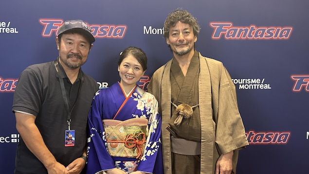

安田淳一的《时空武士》，既保留了时代剧流派的惯用手法，又成功避开了时间旅行电影的陈词滥调，成为了一部深刻人性化、令人愉悦的作品。

《时空武士》导演安田淳一（左）与两位主演山口马木也以及Yuno Sakura来到蒙特利尔奇幻电影节。
照片：Radio-Canada / Yan Liang / RCI
Yan Liang
刚刚结束的蒙特利尔奇幻电影节（Fantasia Fest）上，一部关于日本武士穿越到当代的电影《时空武士，A Samurai in Time》成了观众票选奖的大热之一。
现场放映结束后，全场观众起立欢呼长达数分钟，导演安田淳一（Yasuda Jun’ichi），两位主演——扮演会津藩武士小佐新卫门的山口马木也（Maikya Yamaguchi）以及扮演片场助理的Yuno Sakura身着和服出场，更是让观众的热情达到了沸点。
安田淳一表示，自己小时候常常看当时流行的时代剧， jidaigeki
，也就是日本电视中专门关于武士的类型剧，充满了各种脸谱化的情节和英雄人物，很长一段时间在日本电视台非常流行。
我希望向他们致敬，也希望拍出新的世纪带有新鲜内涵的‘时代剧’。
他表示，这部影片在日本试映时，观众的反应也非常好。但是他不知道，远隔重洋的加拿大观众是否喜欢。为此，他一夜没有睡好，但令他感动的是，影片放映过程中，所有的笑点和泪点，蒙特利尔观众和日本观众都有很大的契合。
山口马木也用法语向现场观众大声问候晚上好
之后就泣不成声了，他表示，自己从未想到在遥远的加拿大受到如此温暖而热烈的欢迎。
作为男主角，他承担了片中90%的镜头，从140年前会津藩的武士，到忽然穿越至当代京都的时代剧拍摄片场，他的表演微妙精准地把握了人物，带领观众进入特定的情绪。
Yuno Sakura扮演拼命写剧本希望成为导演的女助理Yoku 一口娃娃音，干练专业善良又可爱。
此外，影片中扮演小佐新为马宿敌风见恭一郎的冨家规政（Fuke Norimasa）以及武士剑术执导师傅的锋蓝太郎（Rantaro Mine）都有着丰富的表演经验，曾在时代剧以及电影中扮演过武士。
笑点和泪点
电影一开场，江户时期的武士小佐新为马和同伴埋伏在宿敌风见恭一郎家门口，准备暗杀他。
剑斗刚刚开始，忽然雷鸣电闪。
等他醒过来，街道是熟悉的，但怎么有穿着牛仔裤拿着手机的人在街上晃悠。
原来他穿越到了现代城市京都某个巷子，而那里，一部时代剧（ jidaigeki ）正在拍摄。
带着娃娃音的现场助理Yoku跑过来，笑容可掬地问他，你是哪个机构的？
笑料从此展开。
一个生活在一百多年前的武士，将对当下的生活又怎么样的反应？又如何适应？
比如，他吃着饭团，竟流下了热泪，因为从未吃过这样软糯和白净的米饭。再次如，第一次吃奶油蛋糕，他同样感动，感叹说日本在过去140年发展在正确轨道上
，这么美味的蛋糕竟然在日常的商店中就可以购买。
他也逐渐喜欢上了愿意帮助他的Yoko，真是个好女孩儿
。
他努力适应新的生活，从一名真刀真枪，随时准备殉职的武士变成了一名尽职尽责的时代剧龙套演员，仔细研究武士可以有多少种死法。
但是，时代剧正处于没落期，剑术指导师傅表示，之前他每天要给数个时代剧拍摄现场做指导，但现在，一个星期也就只有一部剧在拍摄。
看到这里，很多观众觉得，这又是一部时空穿越剧，就像让诺阿的《访客，The Visitors》。他们或者带着某种使命来到不同时空，要冒险完成，或者是割舍不下亲情，拼着性命要回到原地。
但安田淳一的编剧跳出了窠臼，影片出现一个又一个意想不到的转折：探索人的新生，生命中的承诺、道义、原谅、和救赎。
西班牙影评人Jennie Kermode写道，安田淳一创作了一部有效的时代剧，既保留了时代剧流派的惯用手法，又成功避开了时间旅行电影的陈词滥调，成为了一部深刻人性化、令人愉悦的作品。
致敬时代剧
事实上，这部电影不仅仅是一部有趣的穿越幻想片，更是对武士电影的致敬，因为它正像曾经的幕府时代一样逐渐衰落。
安田淳一尤其提到，这是一部向已故演员福本诚三（Seizō Fukumoto）致敬的影片。
福本清三于2021年去世，之前数十年，他是时代剧常客，据说他在银幕上被杀了5万次。
许多影迷都了解，武士影片一直是日本电影一个重要类型，著名导演黑泽明得到世界赞誉以及奥斯卡以及国际电影节奖项的作品，《罗生门》、《七武士》、《乱》无一不是取材自武士这个主题。
而另一部代表性的作品是小林正树的《切腹》（1962 ）。它以血腥的仪式性自杀、荣誉和复仇为情节主线，展现了武士思想的一些核心原则，以及这些以义、勇、仁、礼、诚、名誉、忠义等做内核的思维与日本现代化的冲突。
而武士是日本历史和文化中一个重要的象征，毕竟在明治维新前的近六百年历史中，武士这个阶层曾对日本政治产生深远影响。
安田淳一的这一部剧带着当代人的理念回看，试图找到不同时空人与人之间的共性，或许也希望为武士主题提供一个新的路径，是一部绝对值得花时间去体验的电影。
Début du widget Widget. Passer le widget ?
Japanese film A Samurai in Time at #FantasiaFest , MTL
日本導演安田淳一的《時空武士》在蒙特利爾奇幻電影節首映，贏得觀眾數分鐘歡呼🎉 pic.twitter.com/nlIuUAG58u— YanziRCI (@YanniRCI) August 6, 2024
Fin du widget Widget. Retourner au début du widget ?Yan Liang文章来源于RCI:【报道】穿越时空的武士影片：为何赢得了蒙特利尔观众的心？